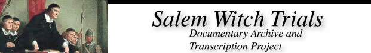

|  |
|
Tituba
Written By Alyssa Barillari |
|
| Salem Witch Trials in History and Literature An Undergraduate Course, University of Virginia Spring Semester 2001 In late February of 1692, Reverend Samuel Parris called in a doctor to examine his nine-year-old daughter, Betty, and eleven-year-old niece, Abigail Williams-both of whom were suffering from spontaneous fits. The children were soon diagnosed as victims of witchcraft, setting off an outbreak of panic and hysteria, which would sweep throughout Salem Village and its neighboring towns that year. Historians have long pointed the collective finger of blame at the Parris's slave, Tituba, one of the three women first accused of witchcraft, and the only member of this unfortunate trio to survive the year. Many interpretations of the Salem Trials acknowledge the pivotal role Tituba's confession played in legitimizing the early suspicions and subsequent investigations of witchcraft, seizing on the vivid descriptions of the devil and his minions that she provided to the examining justices. A number of sources also assert that Tituba also introduced supernatural ideas to the "afflicted girls." These scholars claim Reverend Parris had purchased her in Barbados, unaware of the voodoo and witchcraft practices she would eventually undertake under the roof of the Salem parsonage. However, the mantle of guilt so eagerly thrust upon Tituba may not be rightfully hers (and at the very least, not hers alone). Later investigations have only raised more questions about the very little verifiable information available on her. Most of the perceptions and understandings of Tituba, today commonly accepted as fact, are actually based on local tradition and fictional literature rather than actual court documents or eye-witness accounts. Admittedly, the legend of Tituba as the "Black Witch of Salem" (a posthumous appellation which immediately suggests interesting racial and class connotations) may be more mysterious and entertaining than the accurate historical extent of her influence on the Salem trials; nevertheless, the ways in which this myth has been constructed are fascinating as well. In all of the court documents relating to the Witchcraft Trials, Tituba's identity is listed as that of an "Indian Woman, servant" (for example, Warrant vs. Tituba and Sarah Osborne -SWP 745). But as scholars have recently pointed out, somewhere in the development of the Salem lore, Tituba's racial heritage has been transformed and confused-thus she appears in texts variously as "Negro," "half-breed," "colored," or "half-Indian, half-Negro." Assumptions about her origins range from the island of Barbados to Africa to Native American. This confusion necessarily complicates any understanding of the consequential and critical part traditionally assigned to Tituba; we must consider how racial stereotypes and presumptions have contributed to the varying amounts of blame she is forced to bear. Truthfully, Tituba's story may never be clearly sorted out. Her status as a slave constrains any attempts to uncover official records and papers relating to her. The little glimpse of her life that is available is provided only by the court transcripts themselves. Though Tituba's words may resonate to us through the court records, she cannot tell her version of the events leading up to the Trials, she cannot share her own history and memory of Salem and life before it. In addition to Tituba's own recorded words, we can obtain some information based on what her contemporaries said of her. Beyond these strict limitations however, we can realistically draw no further conclusions as to her racial identity, affinity for witchcraft and stories of the occult, nor motivations for confessing to the accusations. What we do know is from the historical documents is that Tituba was in fact a slave in the Parris home at the time of Betty and Abigail's initial sufferings. Tradition holds that she was married to another slave, John Indian, and the couple was purchased by Reverend Parris during time he spent in Barbados. Tradition, however, does not a history make. Tituba and John Indian did reside with the Parrises; Samuel Parris had a plantation in Barbados, and he owned two slaves after he returned to Boston, and she could have come from Barbados. However, the story that Tituba struck the "fatal spark" and ignited simmering tensions in Salem Village by enthralling the local teenage girls with her stories of African or Caribbean voodoo and magic spells must be recognized for what it is --a story. It was not her "voodoo spells and stories" which, in fact, caused the girls' initial hysterics but their practice of forbidden fortune telling. Nowhere in the court records or contemporary accounts is Tituba said to have taught the practice of fortune telling to the girls in Rev Parris' house. The fortune telling technique that the girls' used, as reported by one of them to the Rev. John Hale, was an egg white in a glass of water. This was a commonly known device in New England at the time, and it was condemned by the Puritans as a demonic practice. According to the Rev. Hale, one of the girls saw a "specter in the likeness of a coffin" in the glass, and she and another girl fell into fits. Tituba did not confess to the teaching of fortune telling; she confessed to signing the Devil's book, flying in the air upon a pole, seeing a cats wolves, birds, and dogs, and pinching or choking some of the "afflicted" girls. She also said she was beaten by her owner, Rev. Parris, and was told to confess to witchcraft, which she did -- and what she confessed to was all culturally European, not African or Caribbean. Tituba's confession, however, did ignite a "spark" in the court, especially when she named the other accused witches, Good and Osborne, as her accomplices. Confession is what the judges were looking for, and Tituba's "evidence" of a conspiracy of witches in Salem Village stimulated the court and the girls to find and convict more people. |
|
Bibliography Bernard Rosenthal, Salem Story, 1997. "Tituba's Story," New england Quarterly, Vol. 71, No. 2 (1998).
|